Galería de Trabajos Realizados
Un vistazo a la calidad que aplicamos en cada reparación de culata o cámara en Barinas.

Reparación Especializada de Culata BKD
Servicio completo para motores diésel
Proceso completo de reparación de culata o cámara bkd utilizado en motores VAG.
Cambio Profesional de Válvulas
Válvulas de admisión y escape de alta calidad
Instalación de nuevas válvulas de admisión y escape en una culata o cámara de motor.
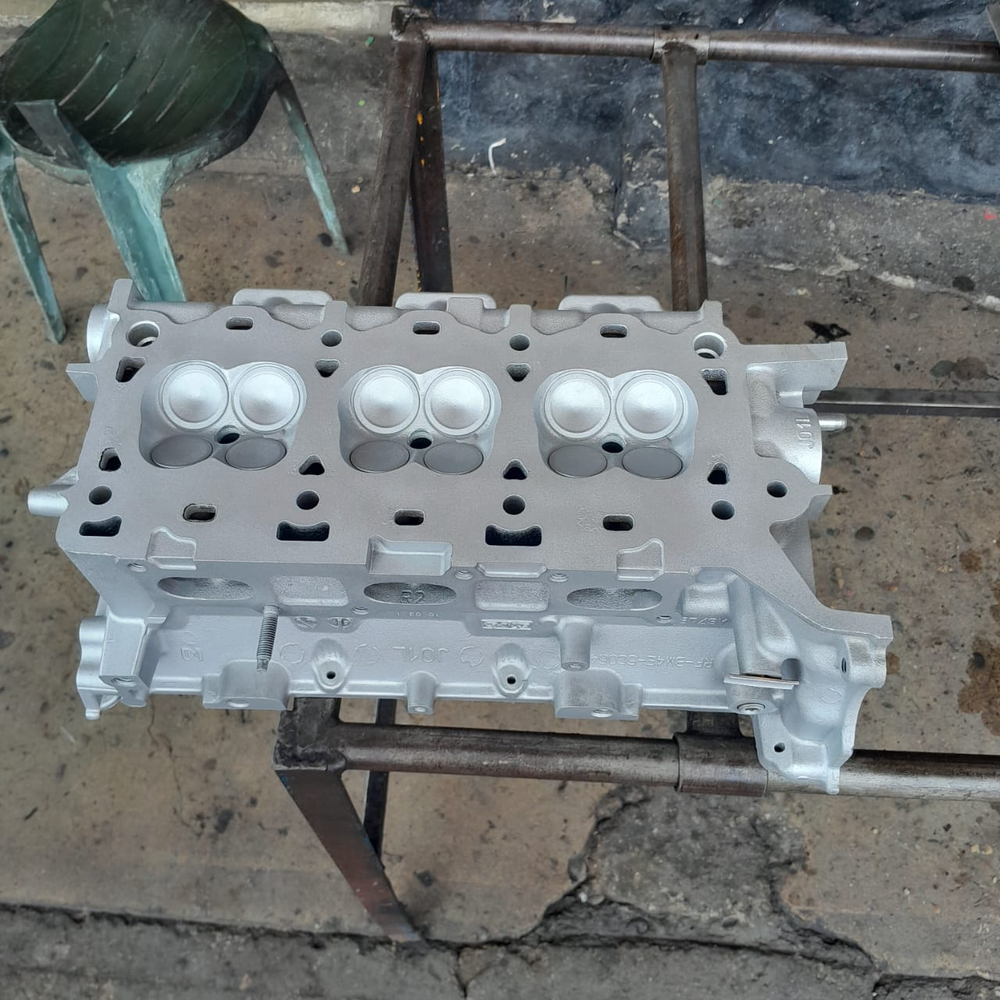
Culata Audi A3 2.0 TDI Reparada
Restauración completa de rendimiento
Reparación integral de culata o cámara audi a3 2.0 tdi con cepillado y cambio de válvulas.
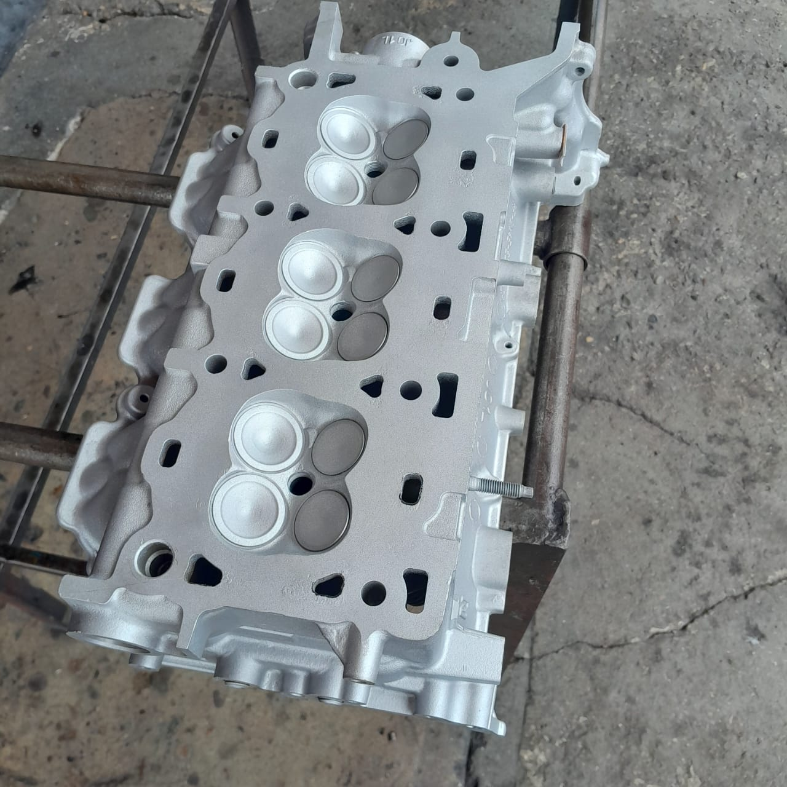
Culata Ford Ranger 2.5 Diesel
Rectificación de precisión para camioneta
Proceso de rectificación de culata o cámara ford ranger 2.5 diesel para corregir alabeo.
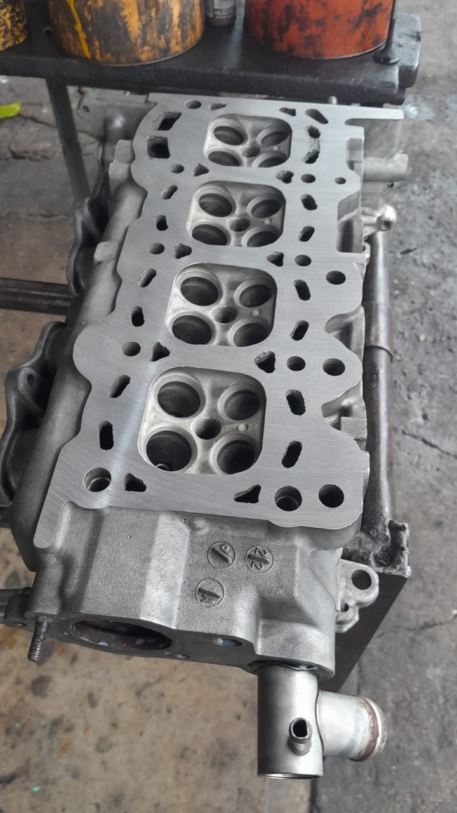
Culata Mitsubishi Montero 2.5
Mantenimiento integral para 4x4
Servicio completo a culata o cámara mitsubishi montero 2.5 incluyendo limpieza ultrasónica.
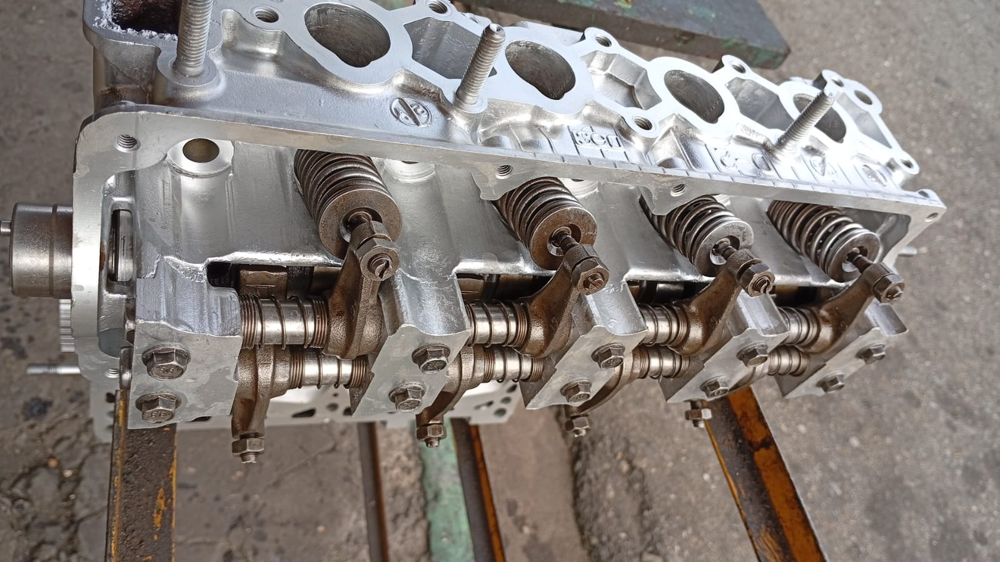
Nissan Pathfinder Reconstruida
Proceso completo de reconstrucción
Reconstrucción completa de culata o cámara nissan pathfinder con soldadura especializada.
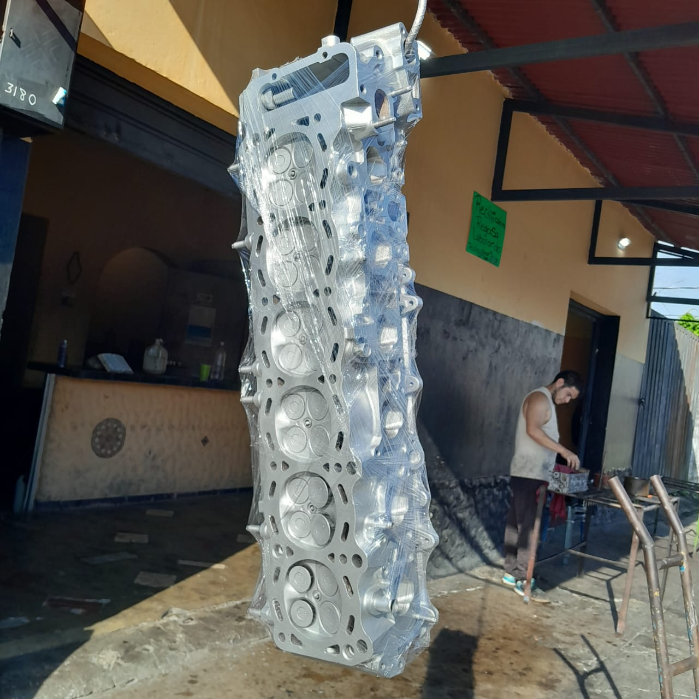
Culata VW T5 2.5 TDI
Mantenimiento preventivo para furgoneta
Mantenimiento preventivo a culata o cámara vw t5 2.5 tdi de una furgoneta de transporte.
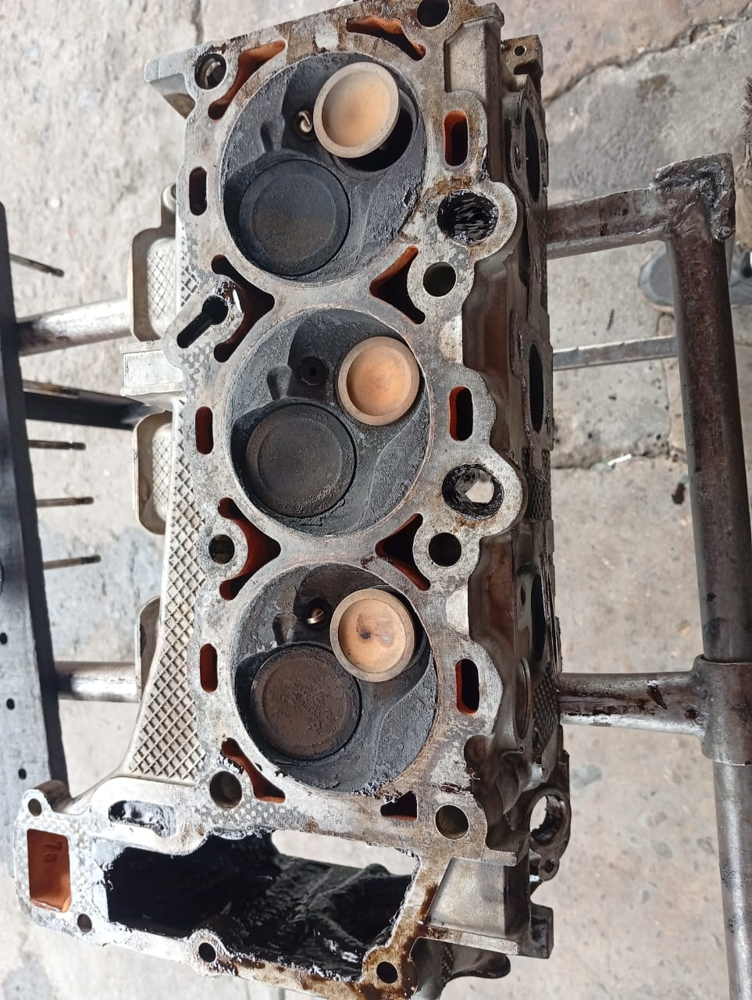
Rectificadora de Motores Diesel y Gasolina
Especialistas en todo tipo de motor
Servicio integral en nuestra rectificadora de cámaras en Barinas para motores diésel y gasolina.
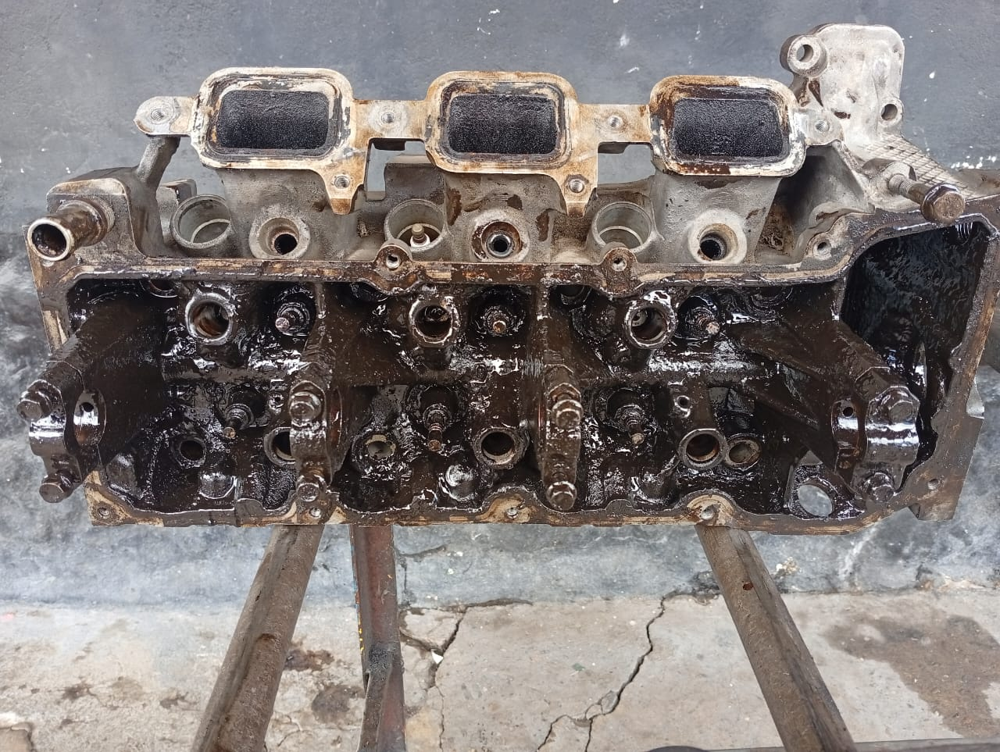
Cepillado de Planos Maquinaria Pesada
Precisión industrial
Proceso de cepillado de planos para maquinaria pesada y vehículos industriales en Barinas.
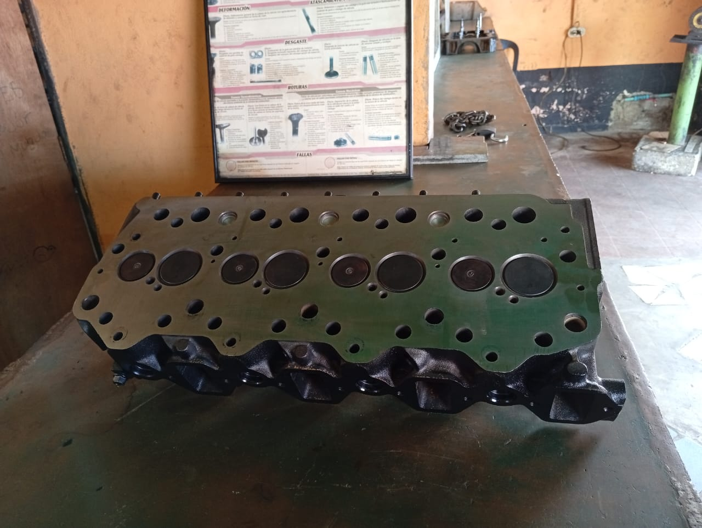
Rectificación de Asientos y Válvulas
Trabajo de precisión
Rectificación de alta precisión en asientos y válvulas para garantizar el sellado perfecto.
Compromiso y Tecnología REGASA
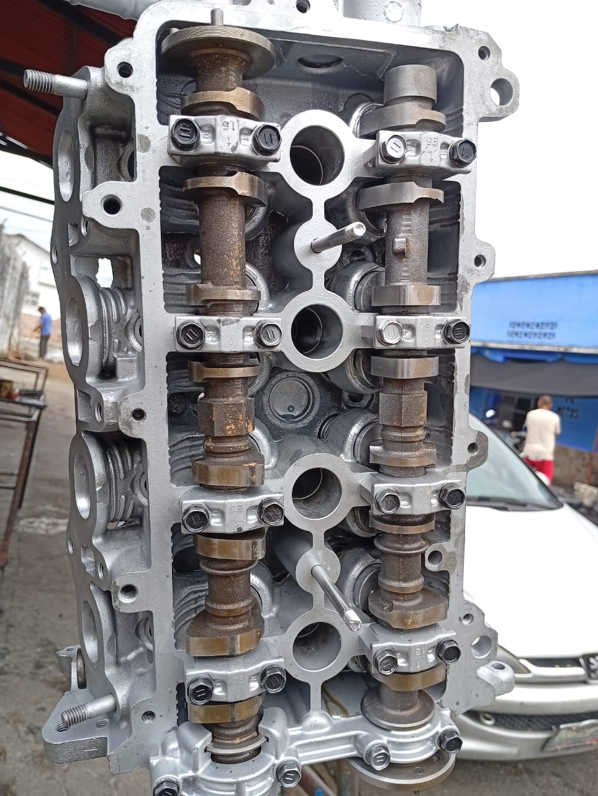
Enfoque en Precisión
En REGASA, nos especializamos en devolverle la vida a tu motor con precisión milimétrica. Como la rectificadora de confianza en Barinas, realizamos el mantenimiento integral de la camara, asegurando un sellado perfecto y un rendimiento óptimo. Si necesitas rectificar con garantía y tecnología moderna, tu motor está en las mejores manos. 🟢🔧
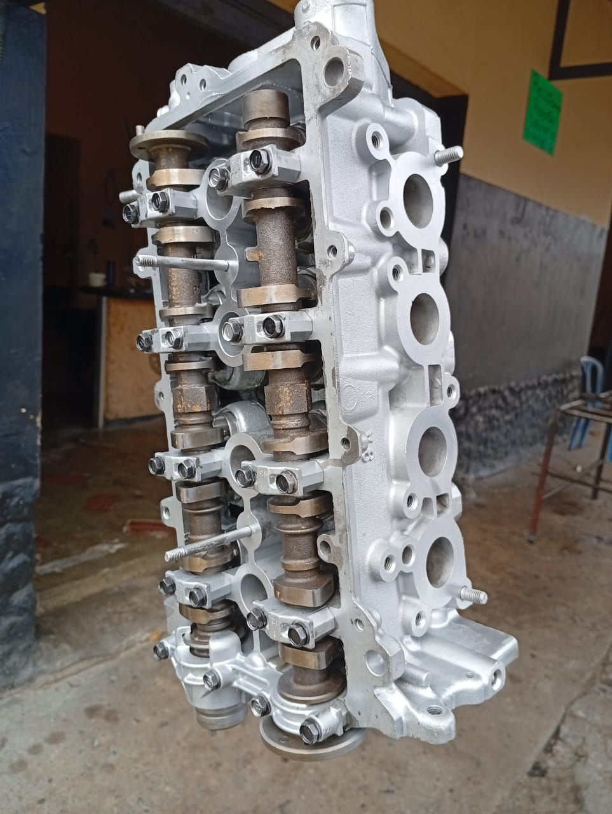
Diagnóstico y Solución
¿Problemas de recalentamiento o pérdida de compresión? El primer paso es un diagnóstico profesional de la camara. En REGASA, contamos con la maquinaria necesaria para rectificar y planificar superficies, garantizando resultados duraderos para vehículos particulares y de carga en Barinas. Calidad técnica que se traduce en confianza para tu camino. 🚗🚛
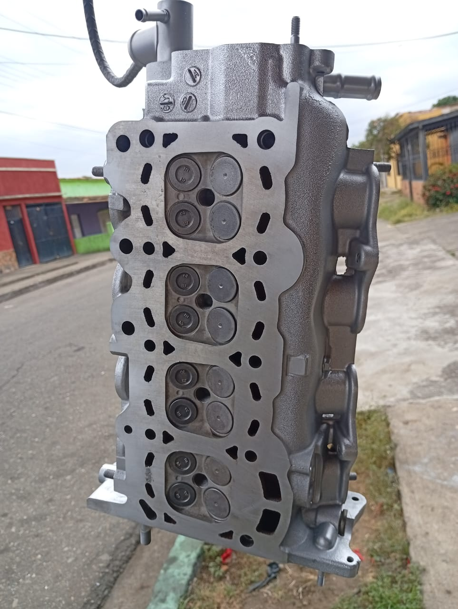
Maquinaria Pesada/Diesel
El sector transporte y agrícola de Barinas exige soluciones robustas. En REGASA, somos expertos en rectificar la camara de motores diesel y maquinaria pesada, aplicando estándares de ingeniería que soportan el trabajo más duro. Somos la rectificadora que entiende la importancia de mantener tu herramienta de trabajo en perfecto estado. 🚜💯